Smart Adaptive Emergency Response Routing System Using Graph Theory
This project models an urban road network as a weighted graph and uses Dijkstra, A*, BFS, and Kruskal algorithms to study how emergency routing changes under traffic congestion and weather conditions. The goal is to move beyond static shortest-path routing and build a more realistic decision-support system for emergency response.
Graph Model
Nodes represent intersections and edges represent road segments.
Dynamic Weight Logic
Route cost is adjusted using congestion factor and weather factor.
Algorithms Used
Dijkstra, A*, BFS connectivity validation, and Kruskal Minimum Spanning Tree.
Demo Focus
The dashboard highlights graph structure, routing comparison, delay analysis, and the final performance story in a simple visual flow.
Performance Snapshot
These result cards summarize the main outcomes from the processed routing and simulation files used in the project.
Road Intersections
100
All intersections were connected during BFS validation.
Road Segments
200
Each directed edge stores base and dynamic route cost.
Simulated Scenarios
30
Emergency source-destination pairs were tested for comparison.
Average Improvement
0.86%
Adaptive routing slightly improved cost over static routing.
MST Total Cost
1327.49
Minimum spanning tree shows the network backbone cost.
Project Flow and User-Facing Functionality
This section explains what the program does and how a user can understand the system from the final dashboard and routing outputs.
1. Data Loading and Preparation
The system reads road, traffic, and weather data, cleans invalid values, and computes base travel time using road length and speed limit.
2. Graph Construction
A directed graph is built where every node is an intersection and every edge is a road segment with route attributes like base time and dynamic time.
3. Dynamic Weight Update
Each edge cost is updated with a congestion factor and a weather factor so that the route represents real-world operating conditions.
4. Routing Algorithms
Dijkstra and A* are used to compute the best emergency route between source and destination intersections under dynamic conditions.
5. Graph Validation
BFS checks overall network connectivity, while Kruskal MST shows the minimum-cost structure needed to keep the network connected.
6. Simulation and Comparison
Thirty scenarios were simulated to compare static routing versus adaptive routing and to measure travel-time reduction and algorithm runtime.
Visualization Dashboard
Each chart tells a specific part of the project story, from graph structure to route cost, bottlenecks, and algorithm behavior.
Graph Theory
Urban Road Network Graph
This graph shows the full road network. Nodes represent intersections, and edges represent road connections across the city model.
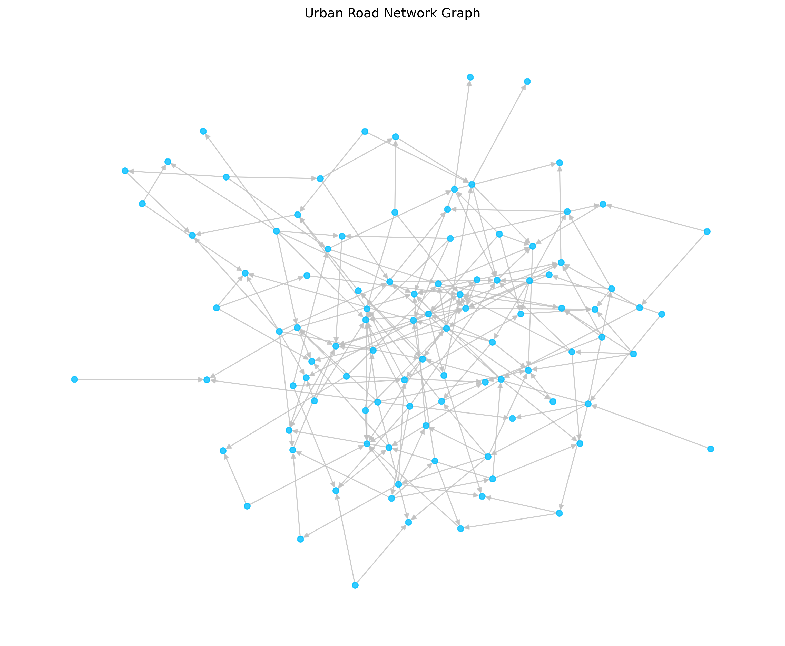
Observation: the network structure is dense enough to support multi-node routing analysis.
Graph Theory
Minimum Spanning Tree Using Kruskal
This visualization presents the minimum spanning tree of the road network. It preserves connectivity with a reduced total edge cost.
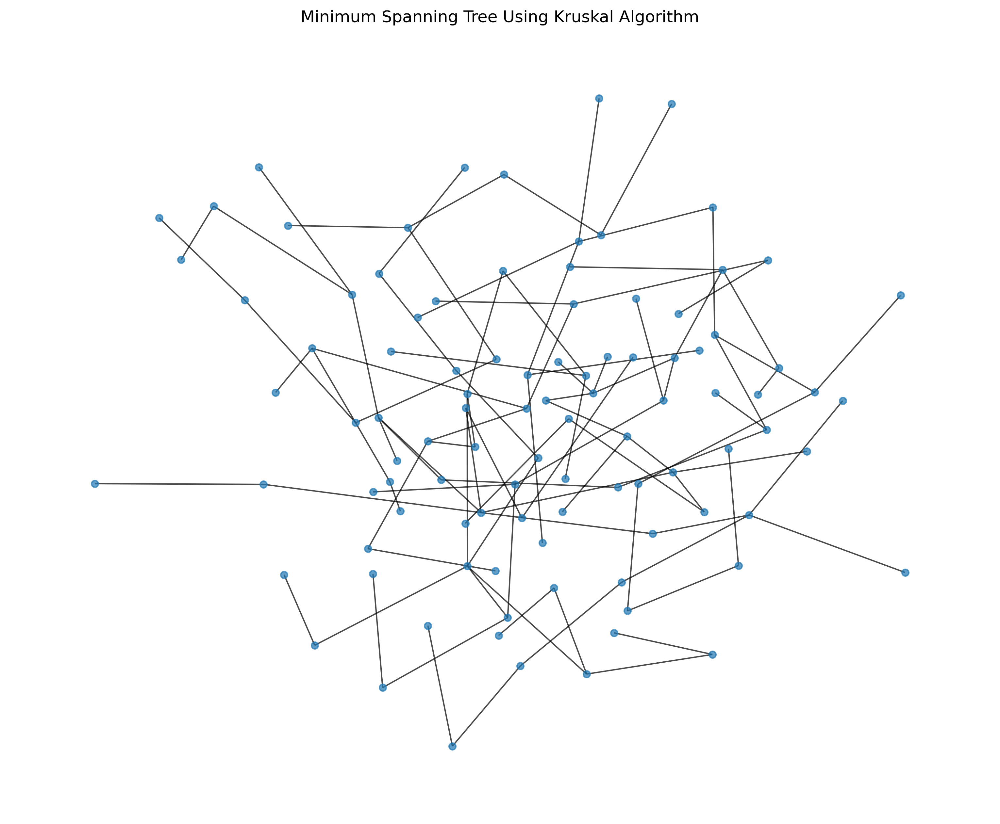
Observation: MST helps explain the core supporting structure of the transportation network.
Routing Demo
Shortest Emergency Route Using Dijkstra
The highlighted path shows the selected emergency route between a source and destination pair based on dynamic edge weights.
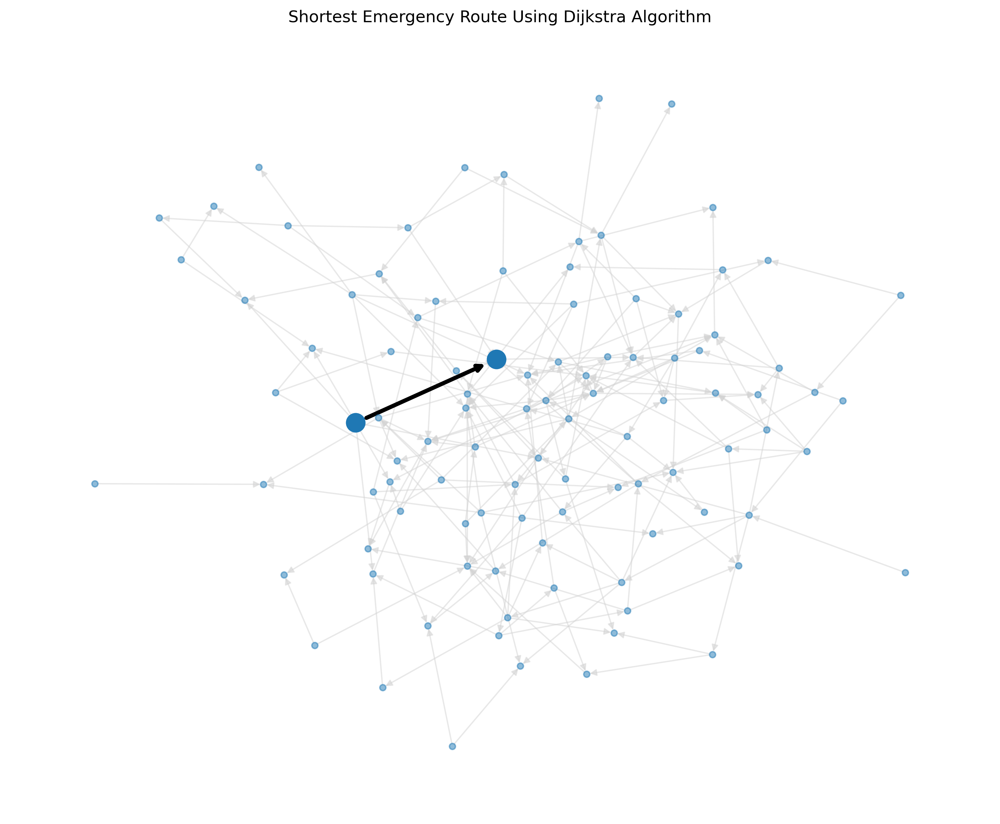
Observation: this makes the graph-theory decision process visible for demo explanation.
Time Analysis
Base vs Dynamic Travel Time Distribution
This histogram compares normal route time with dynamic route time after adding traffic and weather effects to the network.
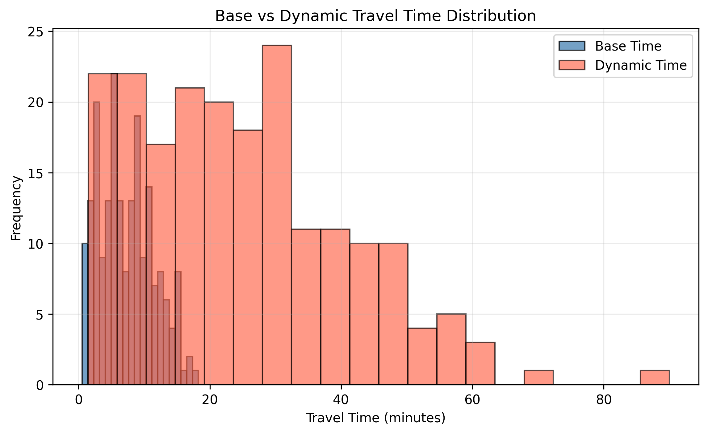
Observation: dynamic travel time is much higher than base time, showing strong real-world delay impact.
Traffic Impact
Impact of Traffic Congestion on Travel Time
This scatter plot shows that routes with higher congestion factors tend to produce larger dynamic travel times.
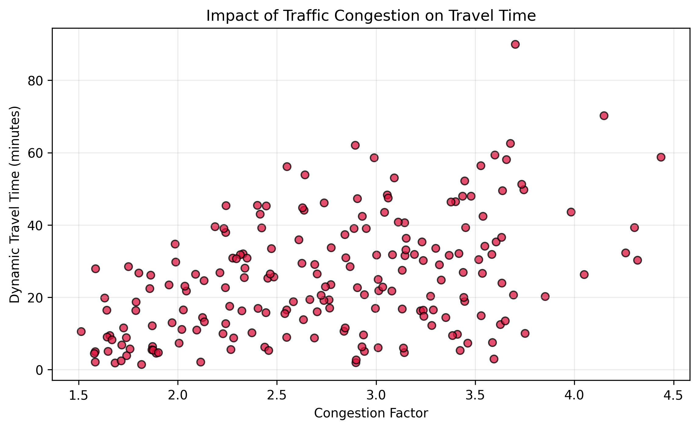
Observation: congestion is one of the strongest contributors to emergency route delay.
Weather Impact
Impact of Weather on Travel Time
This chart connects edge weather factor with route cost and shows how poor weather conditions can increase emergency travel time.
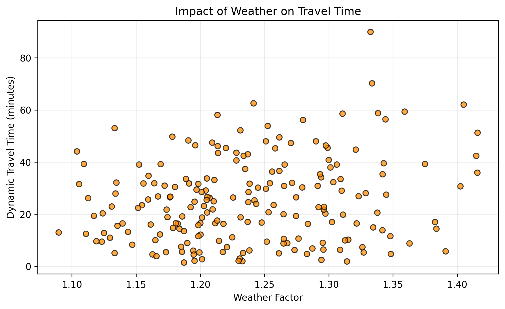
Observation: weather should be included in route planning because distance alone is not enough.
Algorithm Comparison
Average Travel Time by Routing Method
This bar chart compares static routing, Dijkstra, and A* under the same dynamic conditions across all simulated scenarios.
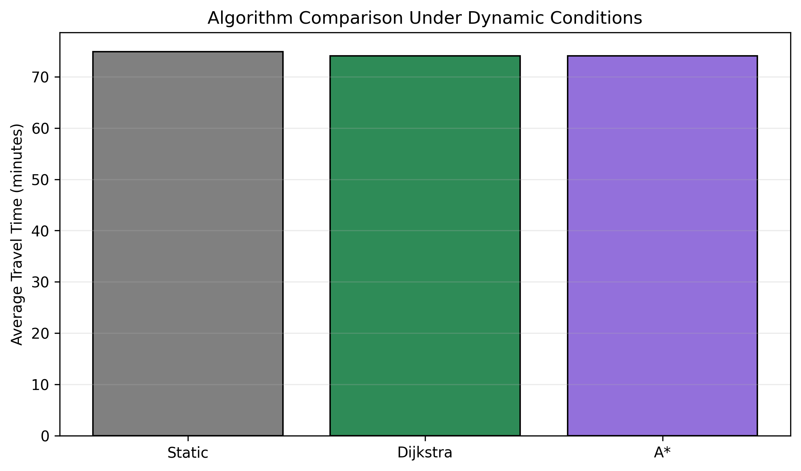
Observation: adaptive methods performed slightly better than static routing on average.
Scenario Analysis
Improvement Across Emergency Scenarios
This line chart shows the variation in percentage improvement from one emergency scenario to another.
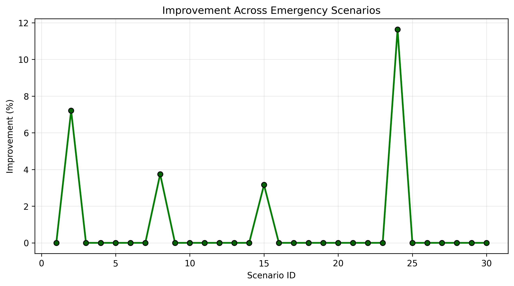
Observation: improvement is not uniform because route alternatives differ from scenario to scenario.
Result Spread
Improvement Distribution
This histogram summarizes how improvement values are distributed, helping explain why the overall average gain is modest.
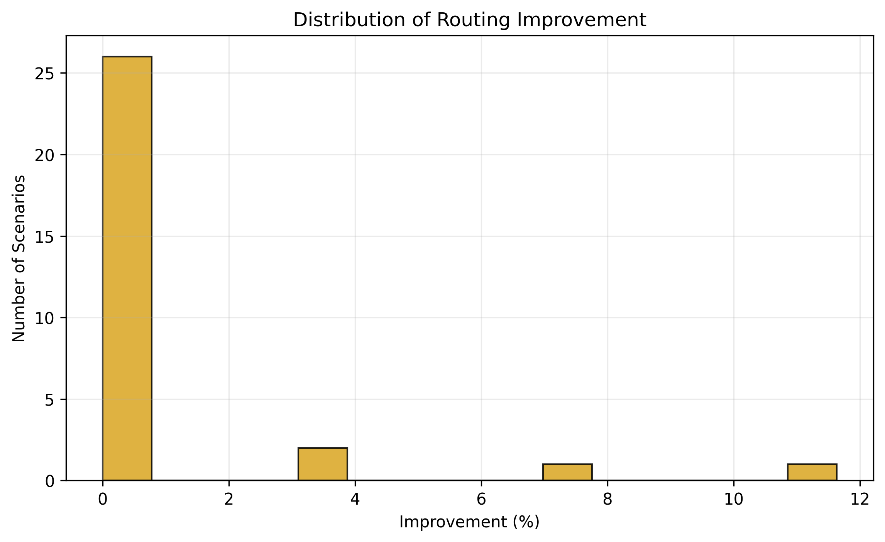
Observation: many scenarios show small gains because the dataset contains several direct or limited alternative paths.
Bottleneck Detection
Top 10 Most Delayed Road Segments
This chart highlights the worst road segments in terms of added delay, helping identify high-risk bottlenecks for emergency response.
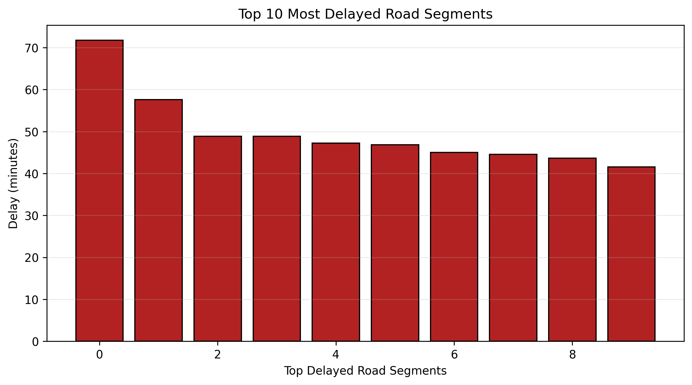
Observation: these roads are the strongest bottlenecks and may need priority management or lane planning.
Efficiency
Algorithm Runtime Comparison
This runtime chart compares the execution time of Dijkstra and A* for the tested scenarios.
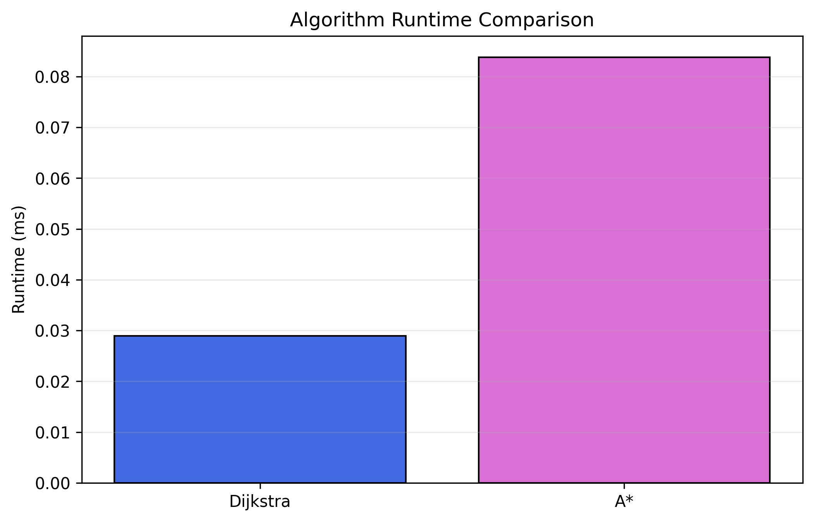
Observation: Dijkstra was slightly faster in this dataset, likely because the graph is relatively small.
Distribution View
Travel Time Distribution by Routing Method
This box plot compares how route travel time varies under static routing versus adaptive routing methods.
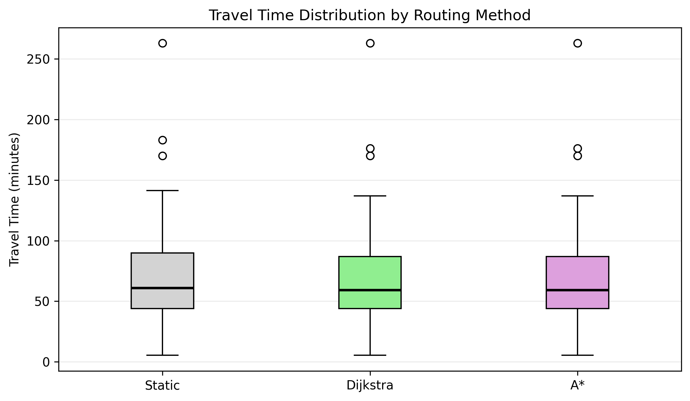
Observation: adaptive routing stays slightly lower overall, but the spread remains similar because of network limits.
Live Interactive Routing Demo
This section allows real-time interaction with the routing system. Users can select
source, destination, and algorithm to visualize the path dynamically.
Live Demo
Interactive Emergency Routing (VizHub)
Observation: This live demo allows dynamic route selection using graph algorithms such as Dijkstra and A*.
Key Findings and What We Observed
This section turns the charts into a clear story that is easy to explain during the final demo or presentation.
Traffic and Weather Matter
The dynamic route cost is much higher than base route cost, showing that environmental and congestion effects strongly influence emergency travel time.
Graph Construction Worked Correctly
The network reached full connectivity during BFS validation, which confirms that the graph model is suitable for route-search analysis.
Adaptive Routing Helped
The average improvement was 0.86%, so adaptive routing provided a measurable but limited benefit over static shortest-path routing.
Dijkstra and A* Behaved Similarly
Both methods produced the same route for all tested scenarios, suggesting that the graph has limited alternative paths or very direct connections.
Bottlenecks Were Clearly Visible
The delayed-road chart identifies where travel slowdown is concentrated, which can help guide emergency-lane planning or route prioritization.
Graph Theory and Visual Storytelling Fit Well Together
The combination of network graphs, path diagrams, and analytical charts makes the project easier to understand for both technical and non-technical viewers.